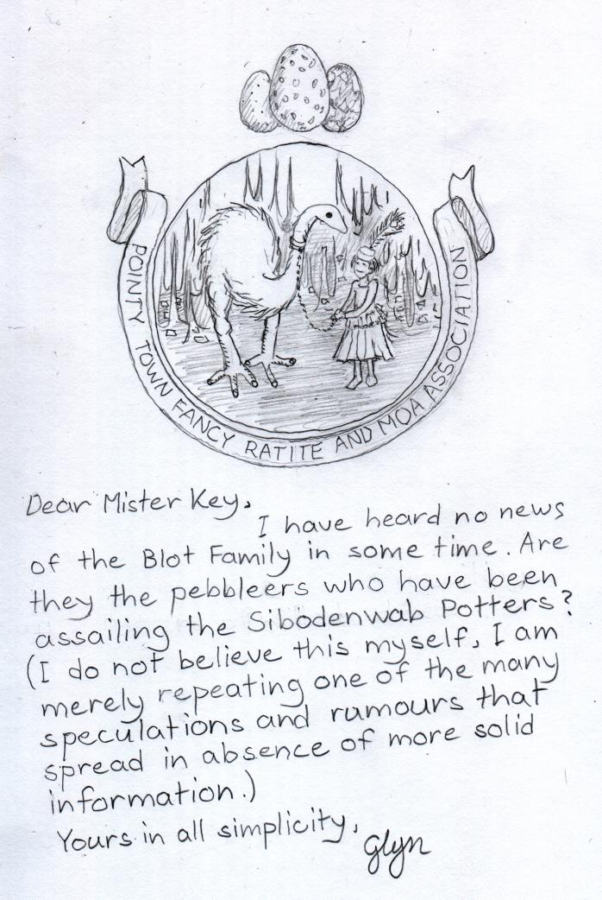

Monday, June the 15th, 2009
back to: title, date or indexes

It is indeed quite some time since I received any news of the doings of the Blot family. I hope to give readers an update when I can, and am keeping a beady, if myopic, eye on the many and various messages spewing out of my metal tapping machine.